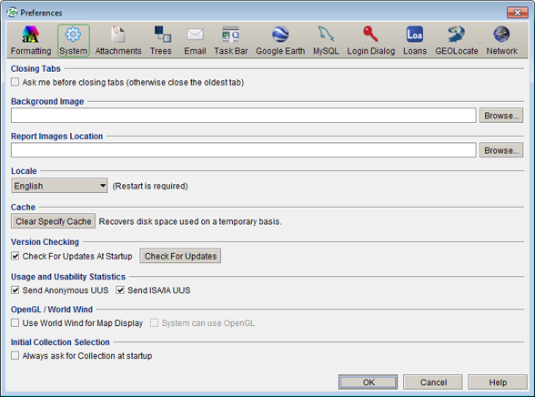

System Preferences
System Preferences
System Preferences
System Preferences

System Preference
These changes are limited to the local application/computer only, they will not appear on any other machine on the network.
Specify only accepts jpg, png and gif image formats.The recommended size for the icon is 700 x 400 at a resolution of 72 dpi.
Delete the path to use the default Specify icon.
US collections must enter into an ISA Agreement with Specify to receive support. Clicking this box will associate institution statistics with the sending institution.
An institution may not receive support without an ISA number and active ISA statistics.